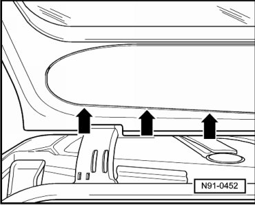
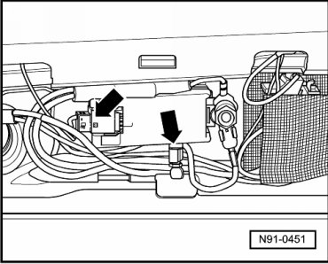
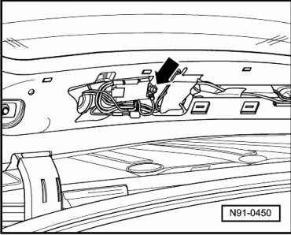
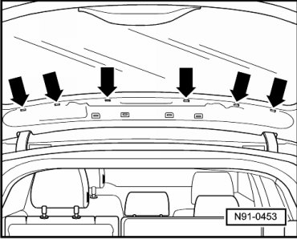

Antenna Amplifier in Rear Lid
Antenna Amplifier in Rear Lid
Removing
Before starting repair work, perform the following:
- Switch off ignition, switch off all electrical consumers and remove ignition key.
- Close rear lid.
- Open rear window.
- Carefully unclip rear window trim - arrows -.

- Remove trim.
- Disconnect electrical connections - arrows -.

- Remove antenna amplifier mounting bolt - arrow -.

- Remove antenna amplifier.
If several antenna amplifiers are removed, mark the affiliation of the individual amplifiers to their locations.
Installing
Install in reverse order of removal.
When installing, ensure amplifier is remounted on the locations where it was mounted before it was removed.
- First insert trim in cut-outs - arrows -.

- Now secure trim by carefully pressing in securing clips.
Be very careful when installing because the trim securing clips are very sensitive to mechanical stress.